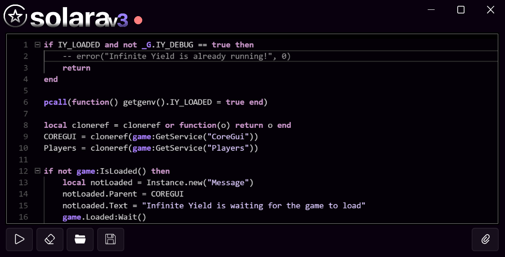
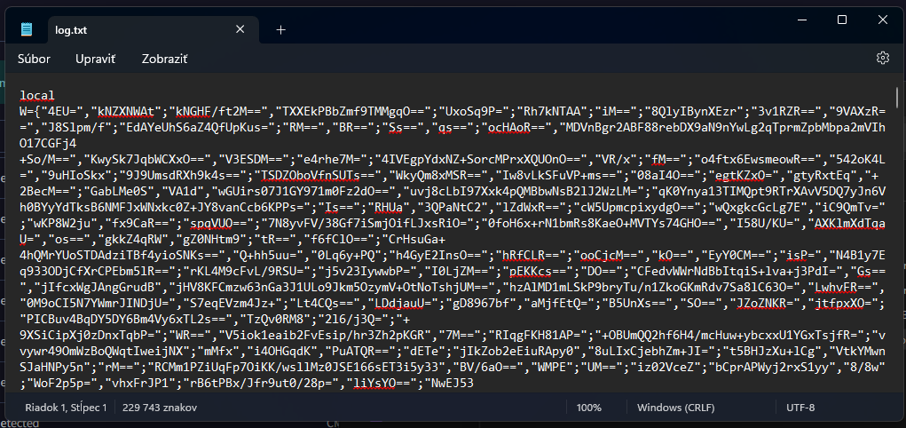

The first & best undetected cookie logger
Unlike other Windows executor, Solara actually works and that too without any lag. Maybe a little bit when we're installing the malware at the first startup, but not after that :).
If you are fed up with fake Windows executors. Give Solara a try. We might rat you, but atleast you can cheat in roblox.
Accounts stolen
Chance of getting your accounts stolen
Level 3 Executor (you pay with data)
Solara is a brand new Windows cookie logger developed by industry expert reverse engineers. Currently Solara executor supports 7 browser and is a basic python logger. Please be informed that Solara is not able to bypass windows security have it disabled in order for us to steal your data.
Please also note that Solara can be detected any time and needs time to fix and update the same. The developers only care about your data, not bypassing the roblox anticheat. Oh by the way, we encrypt our files so you can't check them at all, have a little look :) 
Why shouldn't we encrypt our logs? It's more safety for us not to get caught anyways..
Solara Executor is 100% keyless and always will be. We wouldn't want to ruin your experience of getting your data stolen.
If you are one who believes in good looking tools then Solara is for you. It has very sleek design that can be your eye candy, we made sure to atleast make it look good while stealing everything you own.
Ever thought what will happpen if Roblox detect Solara? Well, we are always here to provide you instant updates and upgrades for free (the price is your data).
If you consider your data a thing that's not useful to you, we'll gladly take it, but other than that yes.
Yes, with your passwords.
No, our developers are too retarted to find any way around it.
No, Solara is only available as a Windows executor and cannot be used on Android or iOS devices. We are too lazy to make our logger for other devices.